سنستكشف العالم المذهل للكائنات الحية على الأرض: من الخلايا إلى الممالك، واكتشاف كيمياء الحياة والتعرف على التهديدات من الأنواع الغازية.
ما الذي يميز الكائن الحي عن المادة غير الحية؟ ثلاث خصائص عامة وثلاث وظائف حيوية رئيسية.
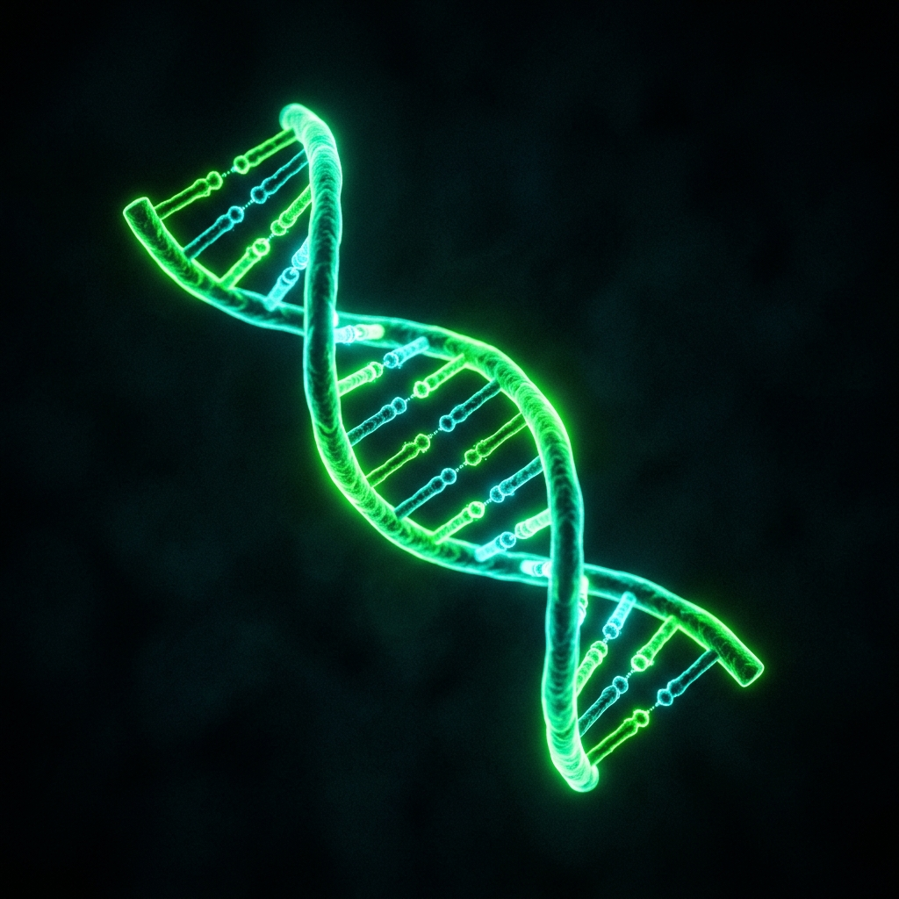
تتكون الكائنات الحية من مادة عضوية (على عكس المادة غير الحية)، على الرغم من أنها تحتوي أيضًا على بعض المادة غير العضوية.
تقوم جميع الكائنات الحية بثلاث وظائف حيوية أساسية: التغذية، العلاقة، والتكاثر.
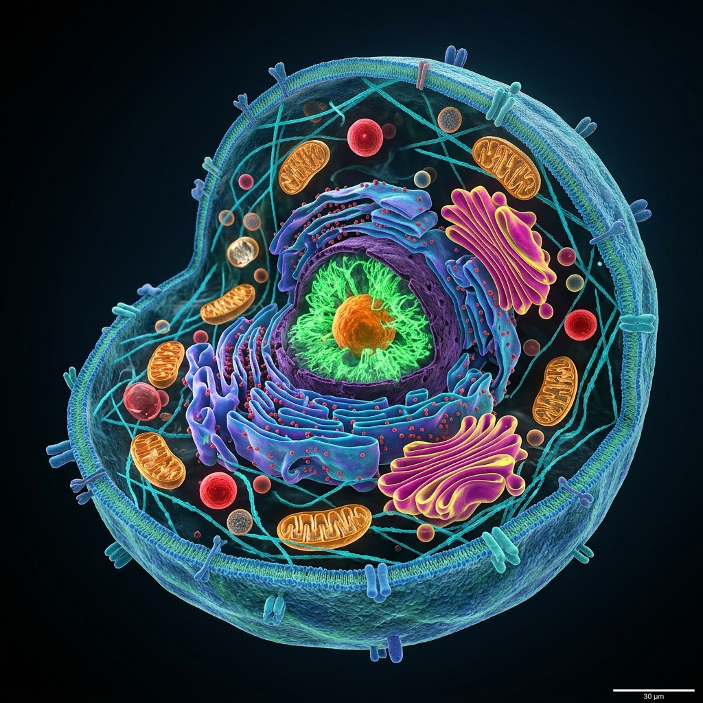
الخلية هي الوحدة الأساسية للحياة. بعض الكائنات وحيدة الخلية؛ والبعض الآخر متعدد الخلايا.
تتكون مواد الكائنات الحية بشكل أساسي من أربعة عناصر. تشكل مجموعات هذه العناصر المواد العضوية وغير العضوية.
مواد حصرية للكائنات الحية. تعتمد على شبكات من الكربون.
السكريات الدهون البروتينات الأحماض النووية (DNA)السكريات: وتسمى أيضاً الكربوهيدرات. الجلوكوز هو أحدها — يمد الجسم بالطاقة الحيوية.
الدهون: الشحوم والكوليسترول. هي احتياطيات للطاقة وجزء رئيسي من غشاء الخلية.
البروتينات: تشارك في العديد من العمليات، أساساً في الوظائف الهيكلية والبنائية.
الأحماض النووية: الحمض النووي هو الأكثر شهرة. يحتوي على المعلومات الوراثية.
مواد لا تحتوي على هيكل كربوني (أو بكميات ضئيلة جداً).
الماء الأملاح المعدنيةالماء: المادة الأكثر وفرة في تكوين الكائنات الحية. جميع التفاعلات تحدث من خلاله.
الأملاح المعدنية: يمكن أن تذوب في السوائل الداخلية وتكون هياكل صلبة مثل العظام والأصداف.
الوظائف الحيوية الثلاث الرئيسية للكائنات الحية. انقر على كل علامة تبويب لمعلومات أكثر.
هي مجموعة العمليات التي تحصل الكائنات الحية من خلالها على المادة و الطاقة اللازمتين للقيام بوظائفها الحيوية الأخرى.
تستطيع إنتاج مادتها العضوية انطلاقاً من مواد غير عضوية من البيئة (ماء، أملاح معدنية، ثاني أكسيد الكربون). النباتات، الطحالب، وبعض البكتيريا.
تحتاج إلى مادة عضوية جاهزة؛ أي أنها تتغذى على كائنات أخرى أو بقاياها. الحيوانات، الفطريات والكائنات الدقيقة.
تتفاعل الكائنات الحية مع بعضها البعض. الحيوانات تنشئ علاقات تعاون أو تنافس فيما بينها.
تشمل هذه الوظيفة أيضاً تفاعل الكائنات مع بيئتها المحيطة: فهي تستشعر التغيرات البيئية وتستجيب لها.
تحافظ الكائنات الحية على بيئتها الداخلية رغم تغير العوامل الخارجية بفضل وظيفة العلاقة والتكيف. مثلاً، نبات الصبار يخزن الماء والخفافيش تدخل في سبات شتوي.
من خلال التكاثر، يمكن للكائنات الحية أن تنشئ نسلًا مستقبليًا للحفاظ على النوع. في هذه العملية قد يشترك كائن واحد أو كائنان.
يشارك فيه كائن وحيد، حيث يكون النسل الناتج نسخًا مطابقة تمامًا للأب (مثل انقسام البكتيريا).
يشارك فيه كائنان، بالغا الذكر والأنثى، من خلال دمج خليتين تناسليتين مختصتين تُدعى الأمشاج (gametos)، مما يخلق نسلًا جديدًا مختلط الخصائص.
جميع الكائنات الحية تتكون من خلية واحدة أو أكثر. الخلايا هي أصغر الوحدات الحية.
| الهيكل | الوظيفة |
|---|---|
| الغشاء البلازمي | طبقة رقيقة تغطي الخلية بأكملها، وتتكون أساساً من الدهون. تنظم تبادل المواد من الخارج إلى الداخل والعكس. |
| السيتوبلازم | المحتوى الداخلي للخلية، يتكون من سائل لزج وعناصر متعددة الوظائف (العضيات). |
| المادة الوراثية | مكونها الرئيسي هو الحمض النووي (DNA). تحتوي على المعلومات التي تحتاجها الخلية للقيام بجميع أنشطتها المحددة. |
خلايا ذات تنظيم أبسط. عادة ما تكون أصغر من حقيقيات النوى. هي كائنات وحيدة الخلية مثل البكتيريا.
غطاء صلب. يقع حول الغشاء البلازمي. يعطي الخلية شكلاً ويحميها.
العضية الوحيدة. تشارك في بناء البروتينات.
تسبح بحرية في السيتوبلازم — غير مغلفة داخل نواة.
امتدادات طويلة توجد في بعض البكتيريا. تستخدمها للتنقل من مكان لآخر.
ذات تنظيم داخلي أكثر تعقيداً من بدائيات النوى. نظراً لعدم وجود جدار خلوي لها، فغالباً ما تمتلك شكلاً غير منتظم.
غلاف يحيط بمعظم المادة الوراثية. تقع حول المركز.
العضية المرتبطة بإنتاج الطاقة.
نظام قنوات بغشاء. تقوم بنقل المواد.
عضية لجمع وتعديل وتوزيع المواد.
تشارك في انقسام الخلية.
عادة ما تمتلك جدار خلية صلباً يمنحها شكلاً منتظماً. تحتوي على بلاستيدات خضراء — للقيام بعملية البناء الضوئي.
صلب. إلى جانب الحماية، يمنح الخلية شكلاً منتظماً.
العضية التي تنتج المادة العضوية. يحدث فيها البناء الضوئي.
مؤثرة بسبب حجمها الكبير. تقع على أحد جوانب الخلية.
تقع على جانب واحد، بسبب الحجم الكبير للفجوة العصارية.
على عكس الخلايا الحيوانية، ليس للخلايا النباتية آليات للحركة.
| الميزة | بدائية النواة (Procariota) | حقيقية النواة (Eucariota) |
|---|---|---|
| النواة | لا تمتلك نواة — المادة الوراثية منتشرة في السيتوبلازم | نعم، تحتوي على نواة محددة ومُحاطة بغشاء |
| الحجم | أصغر (1-10 ميكرومتر) | أكبر (10-100 ميكرومتر) |
| العضيات | ريبوسومات فقط | عضيات كثيرة (ميتوكوندريا، بلاستيدات خضراء...) |
| أمثلة | البكتيريا | الحيوانات، النباتات، الفطريات، الطلائعيات |
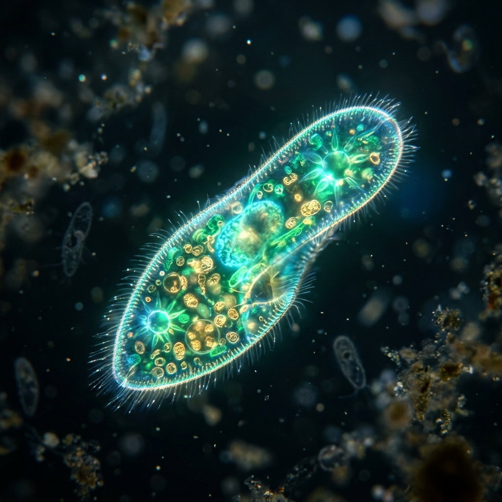
تتكون من خلية واحدة فقط. هذه الخلية المفردة تعيش بحرية وتؤدي جميع الوظائف الحيوية لكل كائن. أمثلة: البكتيريا، الأميبا.
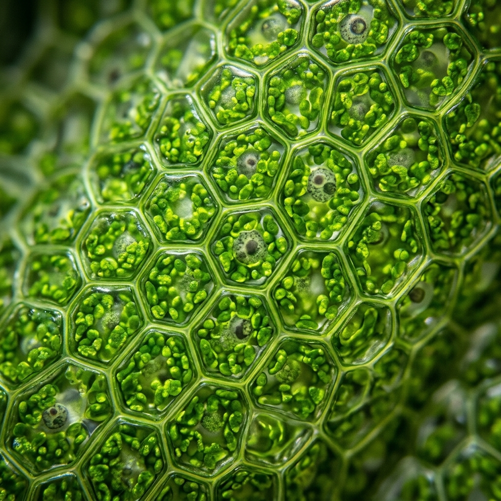
تتكون من عدد كبير من الخلايا. تتخصص هذه الخلايا لوظائف محددة وتعتمد على بعضها البعض للبقاء على قيد الحياة. أمثلة: النباتات والحيوانات.
مجموعات من الخلايا المتشابهة التي تؤدي نفس الوظيفة. مثل النسيج العضلي.
هياكل تتكون من عدة أنسجة تؤدي وظيفة معينة. مثل العظم.
مجموعات من الأعضاء تعمل بشكل متناسق لأداء وظيفة حيوية.
تغير نظام تصنيف الكائنات الحية عبر التاريخ مع تقدم العلوم.
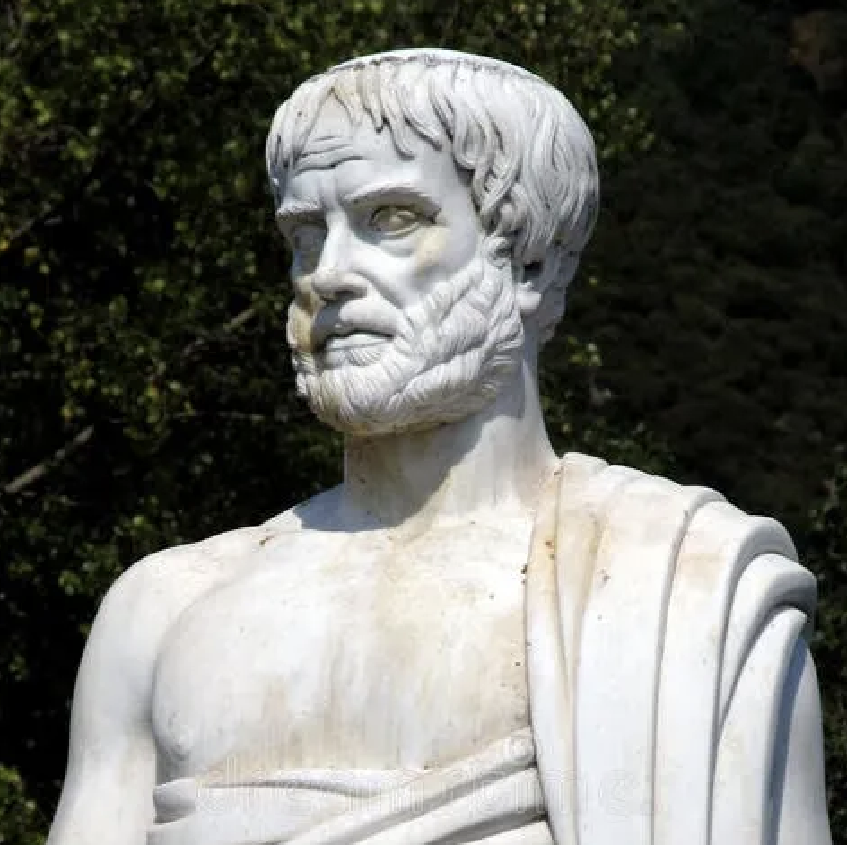
قسّم الفيلسوف اليوناني الكائنات الحية إلى مجموعتين رئيسيتين: الكائنات ذات "الروح النباتية" (النباتات) وذات "الروح الحساسة" (الحيوانات).
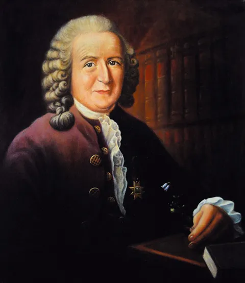
رسّم هذا العالم النباتي السويدي فكرة أرسطو بتأسيس مملكتي الحيوان والنبات بشكل رسمي باستخدام أسماء علمية.
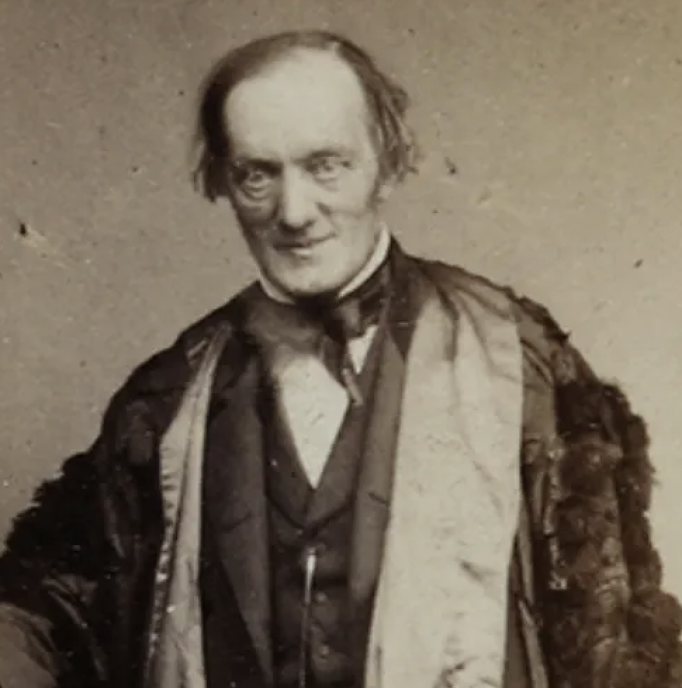
اقترح ريتشارد أوين مملكة الطلائعيات. ومَيَّز إرنست هيكل لأول مرة بين الكائنات وحيدة الخلية والكائنات متعددة الخلايا.
أدخل هربرت كوبلاند الفصل الرئيسي بين بدائيات النواة وحقيقيات النواة، مضيفاً مملكة البدائيات (البكتيريا بدون نواة).
فصل روبرت ويتاكر بشكل نهائي الفطريات عن النباتات والحيوانات: البدائيات، الطلائعيات، الفطريات، النباتات والحيوانات.
باستخدام النمر كمثال — من العام إلى الخاص
| المرتبة | النمر |
|---|---|
| المملكة | الحيوانات |
| الشعبة | الحبليات |
| الطائفة | الثدييات |
| الرتبة | اللواحم |
| الفصيلة | السنوريات |
| الجنس | نمر (Panthera) |
| النوع | النمر البنغالي (Panthera tigris) |
حالياً، تُصنف جميع الكائنات الحية في خمس ممالك رئيسية. انقر على كل بطاقة لرؤية التفاصيل.
تشمل جميع الحيوانات الفقارية واللافقارية.
نوع التغذية: غير ذاتية التغذية. التنظيم الخلوي: متعددة الخلايا. نوع الخلية: حقيقية النواة. وجود أنسجة: بأنسجة حقيقية. أمثلة: مرموط، سحلية، خفاش، أخطبوط، دودة الأرض.
تشمل الحزازيات، السراخس والنباتات البذرية أو الزهرية.
نوع التغذية: ذاتية التغذية. التنظيم الخلوي: متعددة الخلايا. نوع الخلية: حقيقية النواة. وجود أنسجة: بأنسجة حقيقية. أمثلة: بلوط، سرخس، أقحوان، حزاز، صنوبر.
الخمائر، العفن والفطريات التي نراها في الغابة.
نوع التغذية: غير ذاتية التغذية. التنظيم الخلوي: وحيدة ومتعددة الخلايا. نوع الخلية: حقيقية النواة. وجود أنسجة: بدون أنسجة حقيقية. أمثلة: خميرة الخبز، عفن الفاكهة، عش الغراب.
تجمع بين الأوليات والطحالب.
نوع التغذية: ذاتية وغير ذاتية التغذية. التنظيم الخلوي: وحيدة ومتعددة الخلايا. نوع الخلية: حقيقية النواة. وجود أنسجة: بدون أنسجة حقيقية. أمثلة: براميسيوم، أميبا، الطحالب الخضراء والحمراء.
تندرج البكتيريا والبكتيريا الزرقاء في هذه المملكة.
نوع التغذية: ذاتية وغير ذاتية التغذية. التنظيم الخلوي: وحيدة الخلية غالباً. نوع الخلية: بدائية النواة. وجود أنسجة: بدون أنسجة حقيقية. أمثلة: ملتويات، عصيات (Lactobacillus)، البكتيريا الزرقاء.
عندما نتحدث عن التنوع البيولوجي، فإننا نعني مجموعة متنوعة من أشكال الحياة. هذا التنوع الكبير هو نتيجة لتكيف الكائنات الحية.
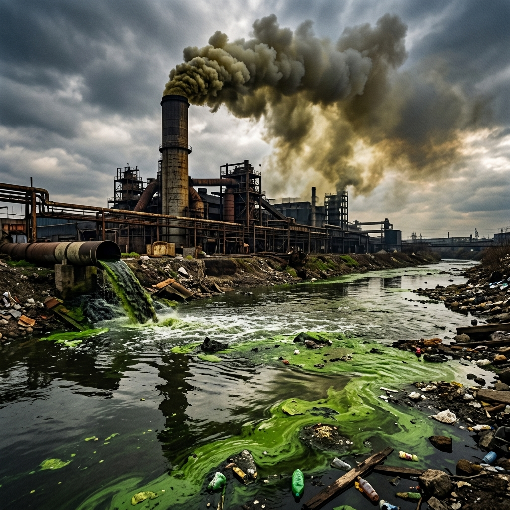
تلوث الهواء والماء والتربة يضر بالموائل ويؤثر على الأنواع.
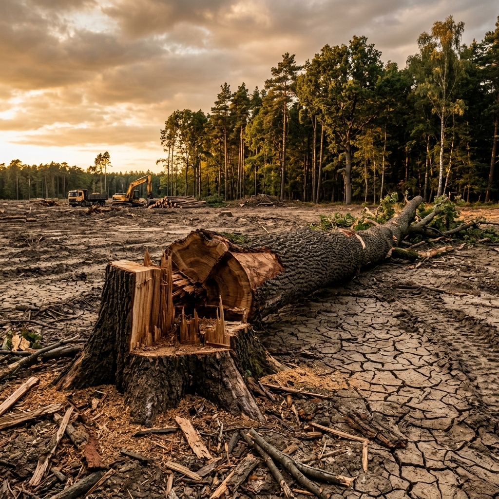
تدمير الغابات والتوسع الزراعي والعمراني يدمر المواطن الطبيعية.
يغير ارتفاع درجات الحرارة النظم البيئية ويصعب على الأنواع التكيف.
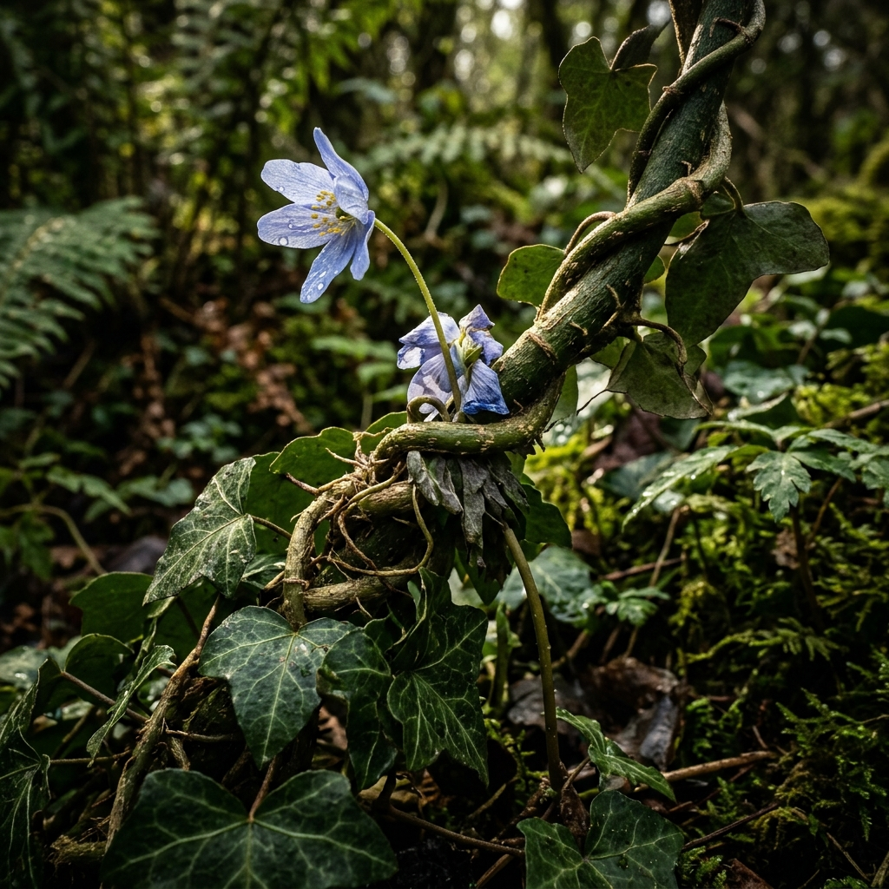
تهدد الأنواع الوافدة من مناطق أخرى التنوع البيولوجي المحلي.
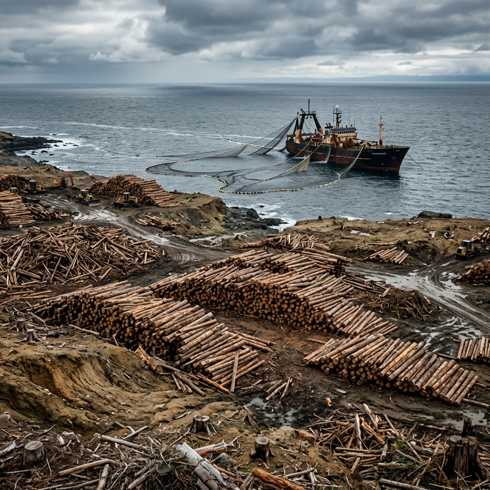
انخفاض أعداد الأنواع بسبب الصيد الجائر والافراط في استغلال الموارد الطبيعية.
نوع يعيش أصلًا في مكان معين. نشأ هناك ويعيش في انسجام مع النظام البيئي. مثلاً، البلوط في إقليم الباسك.
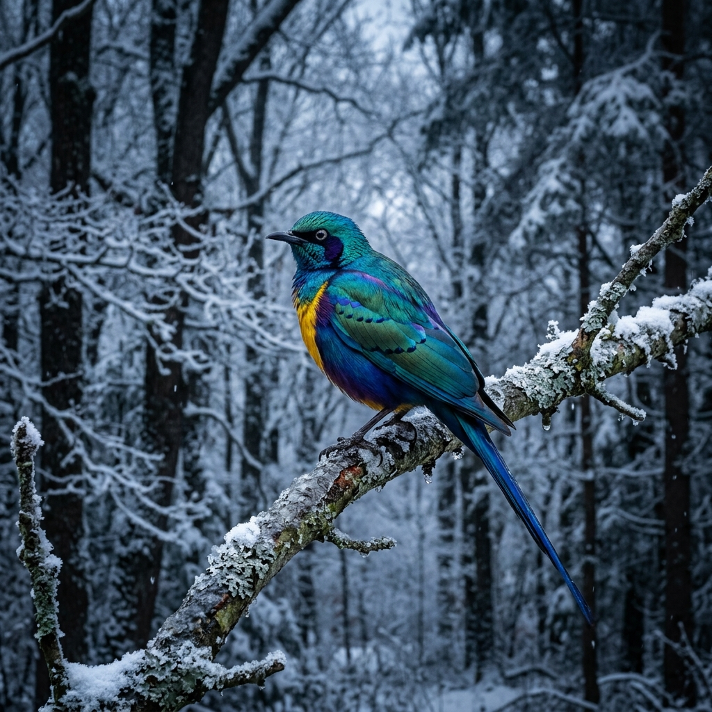
نوع تم إحضاره من مكان آخر، ولم يكن يعيش هناك بشكل طبيعي. غالباً ما يجلبها الإنسان عمداً أو بالصدفة.
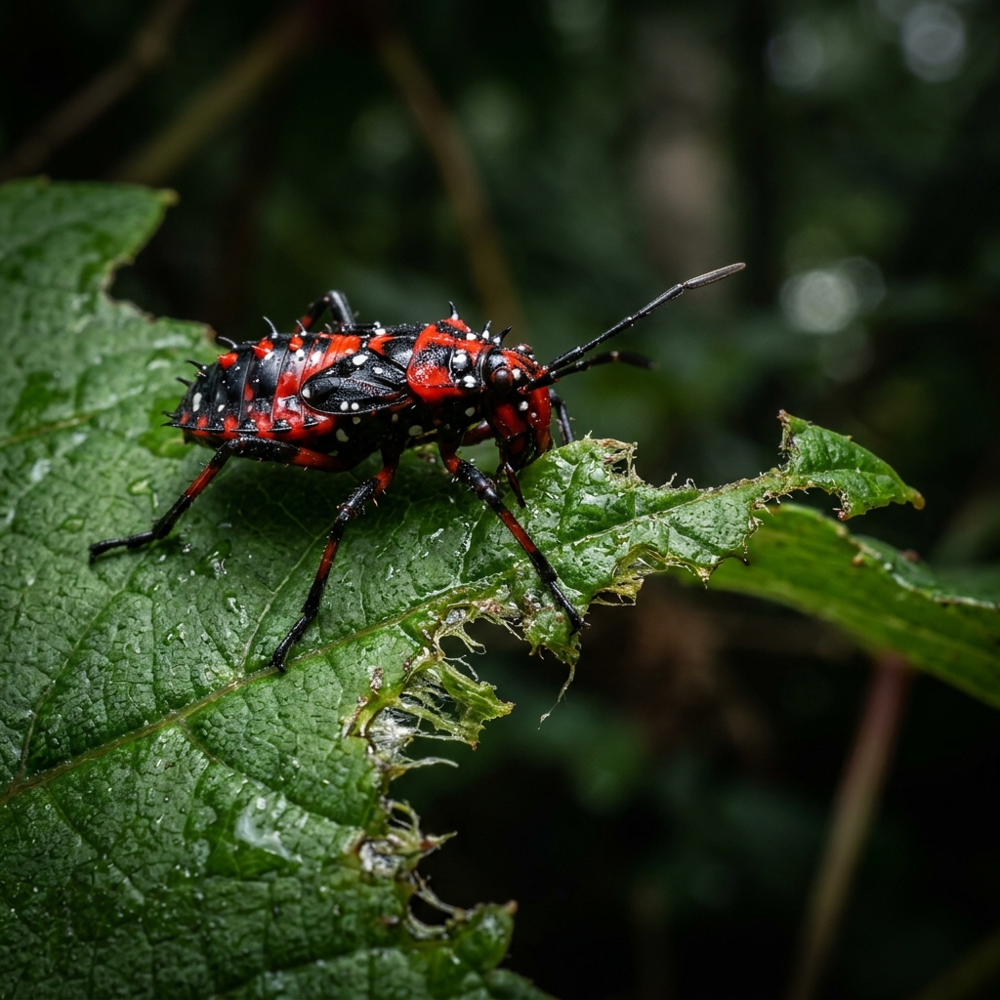
نوع دخيل يلحق الضرر بالأنواع الأصلية الأخرى، حيث ينافسها على نفس الموطن ويهاجم النظام البيئي المحلي.
هناك العديد من الأنواع الغازية في منطقتنا، مما يسبب ضرراً كبيراً للتنوع البيولوجي المحلي.
دبور وصل من آسيا. يهاجم النحل المحلي، ويدمر الخلايا ويهدد تجمعات النحل. بإلحاقه ضرراً بالنحل الأساسي للتلقيح، فإنه يعرض الزراعة والنظام البيئي بأكمله للخطر.
نبات غازٍ قادم من أمريكا الجنوبية. ينمو و ينتشر بسرعة ويحتل مساحات كبيرة، ساحبًا المساحة من النباتات المحلية. ينتشر على جوانب الطرق والمناطق المتدهورة.
سُلحفاة أُحضرت كحيوان أليف، وتم إطلاقها لاحقاً في الأنهار والبحيرات. تتنافس مع السلحفاة الأوروبية الأصلية، وتستولي على موطنها ومصادر غذائها.
نبات جاء من شرق آسيا، ويصعب جداً التخلص منه تماماً. يحل محل الحياة النباتية على ضفاف الأنهار، مما يؤدي إلى تدهور التربة والإضرار بالحيوانات المحلية. جذوره عميقة جداً.
باستخدام هذا الاختبار القصير، يمكنك التحقق من معرفتك. 10 أسئلة!
نتيجتك: